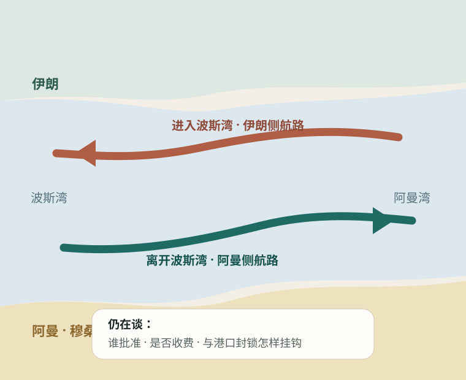

今日热点 01 · 能源 / 航运
伊朗与阿曼推进霍尔木兹航运方案，但还没有定案
美联社8月4日报道，两国谈判出现进展；目前流出的框架是船舶经伊朗控制的航路进入波斯湾、经阿曼控制的航路离开。收费、批准权以及美国对伊朗港口的封锁仍是争议点。

发生了什么
“有进展”是真的，“已经重开”还不是
事实：美联社援引两名地区官员称，谈判中的方案把进湾航路放在伊朗一侧、出湾航路放在阿曼一侧；美国国务卿鲁比奥确认谈判有进展，同时强调尚未达成最终结果。阿曼与伊朗6月的联合声明已经承诺依照国际法维护安全通行，8月4日的新消息是双方开始接近一个可执行的分流框架。
尚未确定：地区官员说方案可能包含安保和海洋环境服务费，并与解除美国对伊朗港口的封锁相连；一名美国官员则表示，任何临时航路都不会要求伊朗批准或缴费。双方对同一方案的关键权利仍说法不一，正式文本公布前，不能把路线图当成协议。
怎么理解
海峡恢复多少流量，比“宣布开放”四个字更重要
美国能源信息署的最新表格估算，霍尔木兹海峡石油流量从2025年第四季度的每日2070万桶降到2026年第一季度的1460万桶。机构同时提醒，2月底以来船舶AIS信号尤其不可靠，2026年的数字仍会修订。也就是说，市场要看的不只是政治表态，还包括实际通行艘次、保险条件和装卸港能否恢复。
判断：如果分流方案真能让更多船安全通行，能源、化肥和航运价格面临的风险溢价可能下降；但收费由谁收、船舶是否要获得一国许可，会决定这究竟是临时疏通，还是海峡治理规则被长期改写。眼前最稳妥的结论只有一个：谈判向前走了一步，终点还没到。
先看船是否真的恢复通行，再看谁有权批准和收费。